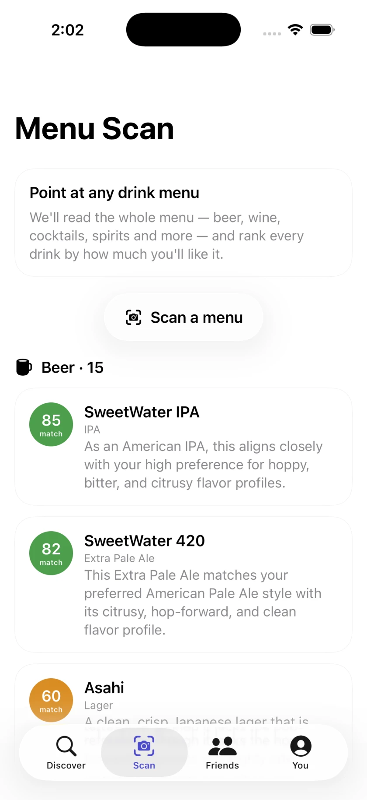

Home › Guides › Drink menu scanner
Drink menu scanner: rank a whole menu by your taste
Updated November 2026
A twenty-line tap list or a wine list with no tasting notes is a lot to take in while someone waits for your order. A menu scanner reads the whole list for you and puts the drinks you're most likely to enjoy at the top.
The scanner at a glance
- What it does
- Reads a photo of a drink menu and ranks every drink on it by predicted match score for you.
- Works with
- Drink menus, tap lists and wine lists. Take a photo or choose ones you already have, and use more than one for long lists.
- Drinks
- Beer, wine, cider, cocktails, sake and spirits.
- Results
- A short reason for each drink, a top pick, your own score for drinks you've rated, and prices exactly as printed.
- Extras
- Ask questions about the menu, revisit past scans, and get a nudge to rate a drink an hour after you tap it.
- Needs
- A connection, and an iPhone on iOS 26 or later.
- Price
- Free. No subscription, no in-app purchases, no ads.
Why drink menus are hard
You sit down, the server is waiting, and the board lists twenty beers. Half the names are puns. The wine list is worse: a grape, a place, a year and a price, and nothing about how it tastes. So most people order what they had last time, or the second cheapest bottle, and hope.
The clues are usually there. A style, a grape, a strength. What's missing is the step that links those words to your own taste, and that's hard to do in your head for twenty drinks at once. It's the step a menu scanner does for you.
How the busy beer menu scanner works
- Open Scan. Point your camera at a drink menu, a tap list or a wine list, or choose photos you've already taken.
- Add every page. Long lists can go in as more than one photo, so a wine list that runs over several pages is fine.
- Let it read. busy beer reads every drink on the menu and works out what each one is, whether that's a pilsner, a Rioja or a margarita.
- See the ranking. The whole list comes back ranked by predicted match score for you, each drink with a short reason.
The scanner needs a connection to read and rank a menu, so it won't work in a signal dead zone.
What you see in the results
- A ranked list. Every drink on the menu, ordered by how well it's predicted to suit you. Mixed menus are fine: each drink is classified on its own.
- A reason for each. A short line on why a drink sits where it does, like an IPA that lines up with your taste for hoppy, bitter beers.
- A top pick. The drink it thinks suits you best is marked, so you have somewhere to start.
- Your own scores. If you've already rated something on the list, it's pinned to your own score. You've already told it what you think.
- Prices as printed. Prices are copied exactly as they appear. If the menu doesn't list one, none is shown.

Ask about the menu
You can ask questions about a menu you've scanned, such as which wine is the driest or which cocktail is the least sweet. Questions use the menu photos, and those aren't kept after you leave the scan. If you want to ask about the same menu later, scan it again.
Look back, and rate later
Past scans are saved, so you can check what was on a list after you've left. When you tap a drink, busy beer nudges you to rate it an hour later, while you still remember how it tasted.
What the scanner won't do
- Guess prices. It copies the prices on the menu and never fills in a missing one.
- Replace the people behind the bar. Predicted scores are AI estimates of taste, not facts about a drink. For alcohol content, ingredients and allergens, ask the venue. Staff also know what's fresh, what just went on and what's about to run out.
- Choose for you. The top pick is a suggestion. If something further down catches your eye, order it and rate it. Every rating, good or bad, fills in your taste profile.
- Work offline. No connection, no scan.
Tips for a good scan
- Find some light. Dim bars are hard on any camera. Tilt the menu toward the nearest lamp or window, and angle laminated pages to avoid glare.
- Get the whole list in frame. Hold the phone square to the page rather than at an angle, and check the top and bottom lines are in the shot.
- Zoom for small print. Pinch the viewfinder to zoom in on tiny type or a chalkboard across the room.
- Use more than one photo for long lists. Several sharp photos of a wine list beat one blurry shot of the whole thing. The same goes for a tap list split across two boards.
- Hold still. Rest your elbows on the table for a second. A sharp photo reads better than a quick one.
It gets better as you rate
The ranking is only as good as what busy beer knows about you. After a few ratings it has a rough sketch. As you add more, your taste profile fills in: six flavor axes for each category, the styles you keep coming back to and how strong you like your drinks, all in plain language. Each rating sharpens the next scan.
Rating across categories helps too. If you mostly drink beer, busy beer translates the palate it knows into wine and the other four categories, and shows an honest confidence rating so you know a real match from a guess. A few wine ratings of your own give it more to go on. The guide to wine for beer drinkers explains how those tastes line up. For a scale that keeps your scores consistent, see how to rate beer.
How to order without an app
No signal, or you'd rather just talk to someone? The same thinking works out loud.
- Ask for a taster. Many bars will pour a small sample of a draft beer before you commit, and some wine bars do the same for wines by the glass.
- Describe your taste, not a name. "Crisp and bitter, not too sweet" tells a bartender far more than "something light". The flavor axes busy beer uses make a handy vocabulary: for beer, hoppy, malty, sour, bitter, sweet and roasty; for wine, dry, tannic, acidic, fruity, oaky and body.
- Name something you already like. "I usually drink pilsner" or "I like Sauvignon Blanc" gives the server a reference point.
- Read the style, not the name. Beer names are often jokes. The style and the strength tell you much more. Beer styles, explained by taste covers the main families.
- Check the strength. Two beers can look alike on a board and be very different in alcohol. If the ABV isn't listed, ask.
Please enjoy responsibly. busy beer is for adults of legal drinking age. Predicted scores are estimates of taste, not facts about a drink: always confirm alcohol content, ingredients and allergens with the venue.
Questions
What is a drink menu scanner?
It's an app that reads a photo of a drink menu, tap list or wine list and tells you about the drinks on it. busy beer's scanner ranks every drink by predicted match score for you, each with a short reason.
Can I scan a wine list?
Yes. It works on drink menus, tap lists and wine lists. For a long list, add more than one photo.
Is the menu scanner free?
Yes. busy beer is a free iPhone app with no subscription, no in-app purchases and no ads, and the scanner is part of it.
Does the scanner show prices?
Only the ones on the menu. Prices are copied exactly as printed and never guessed, so if the menu has no price, none is shown.
Does the menu scanner work offline?
No. Reading and ranking a menu needs a connection, so check you have signal before you scan.
How accurate are the match scores?
They're AI estimates of taste, and they get better the more you rate. Treat them as a guide, not a fact about a drink, and always confirm alcohol content, ingredients and allergens with the venue.
Can I ask about a menu I scanned yesterday?
Your past scans are saved, so you can look back at them. To ask new questions, scan the menu again: questions need the photos, and those aren't kept after you leave.
Get busy beer
Free for iPhone. Rate a few drinks, then scan your next menu.